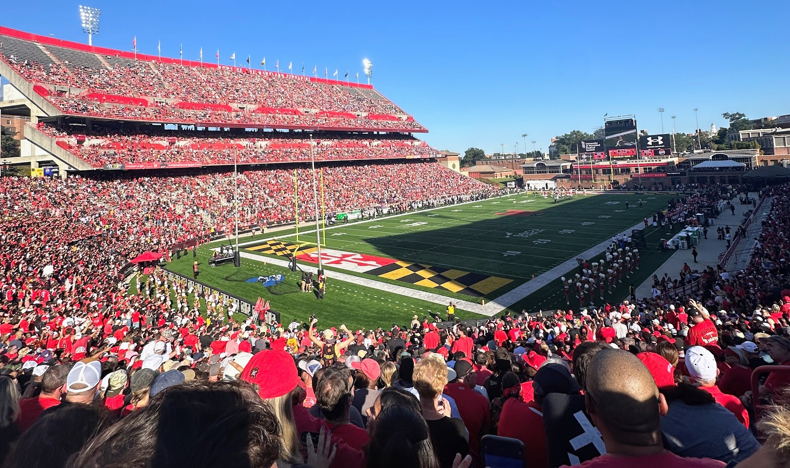
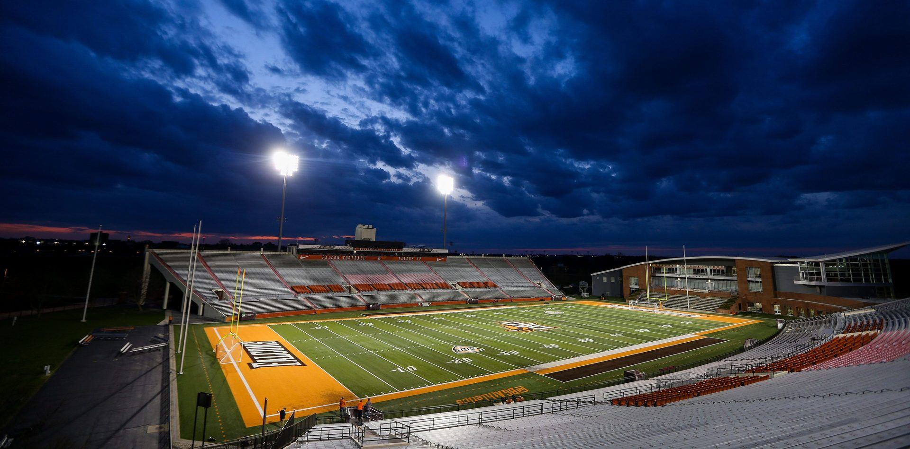

With the rise of sports betting, billions of dollars worth of television contracts, and conference realignment deals, attendance should be booming. Yet inside the stadiums, it is getting quieter. An analysis of game-by-game attendance data from ESPN’s API covering over 19,000 Football Bowl Subdivision (FBS) games between 2002 and 2024 reveals a growing conference divide. While powerhouse conferences like the SEC are filling stadiums to near capacity, mid-major conferences like the Mid-American Conference are losing fans at a concerning pace.
The Numbers Tell the Story
In 2008, college football’s attendance peaked with stadiums averaging 81.2% capacity nationally, an analysis of ESPN API data shows. By 2019, that percentage had already slipped to 75.1%, a decline that predates the COVID-19 pandemic entirely. The sport has partiallyrecovered since, but has never returned to its 2008 high. The divide between conferences,however, is far more dramatic than the national trend suggests.
Average stadium utilization rate by conference, 2002–2024. Data:ESPN API via Kaggle. Analysis by Audrey Ring.
The SEC: Getting Fuller
The SEC, already the conference with the highest attendance in the sport, has become even more dominant. In 2008, SEC stadiums averaged 93.9% capacity. By 2024, that number had climbed to 95.9%. CBS Sports reported the SEC’s total attendance in 2023 (7,715,363) exceeded that of the entire Group of Five combined (7,492,672).

Fans fill SECU Stadium at the University of Maryland during a Big Ten home game. As power conference programs like Maryland attract larger crowds, mid-major conferences like the MAC continue to see declining attendance. Photo credit: Audrey Ring
The MAC: Emptying Out
The MAC is telling a very different story. Mid-American Conference stadiums averaged 62.6% capacity in 2008. CBS Sports reported the MAC’s average attendance rate in 2022 was its lowest ever since 1991. By 2024, the attendance fell further to 54.1%, meaning nearly half of all available seats go unfilled on a typical gameday. Data show schools like Bowling Green and Akron are averaging just over half of their stadium capacity on a typical gameday, a figure that has steadily declined over the past decade.

Doyt Perry Stadium at Bowling Green State University has a capacity of just 23,724. Bowling Green's stadium averaged just over half full in recent seasons,representitive of a broader attendance decline across the Mid-American Conference. Photo credit: BGSU News
Many experts have pointed to different explanations for the decline in attendance. For MAC fans weighing a long drive to watch a game against a 3-7 opponent, the decision may be easy.
Schedule quality also plays a role. CBS Sports found that even SEC programs see attendance drop when home schedules are filled with weaker opponents, suggesting fans at every level are making decisions about which games are worth attending in person.
Dot size represents stadium capacity. SEC stadiums in red, MAC stadiums in blue. Data: NCAA Stadiums via Kaggle.
"We are competing against the 70-inch TV and the beer that is cold in your refrigerator."
— Bob Bowlsby, former Big 12 Commissioner (CBS Sports)
Culture, Geography, and the Divide
The SEC benefits from something harder to measure: its culture. Generations of families hold season tickets across the South and gameday weekends are events that extend beyond just being in the stadium itself. It is a very different culture from what exists in places like Toledo or at Kent State.
Football is simply a different game in Oxford and Tuscaloosa than it is in Miami, Ohio. There is no single explanation as to why the divide exists, but the data makes it clear that it does. By every financial measure, college football has never been bigger. But how many people show up is an entirely different story.